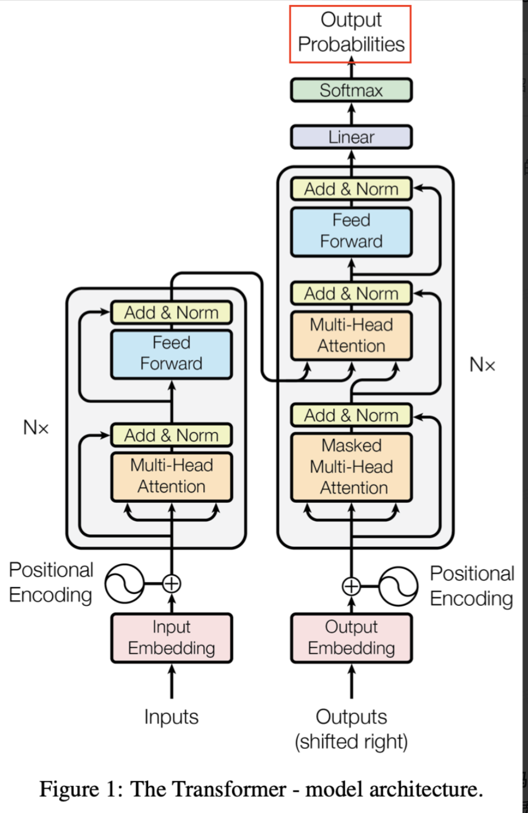
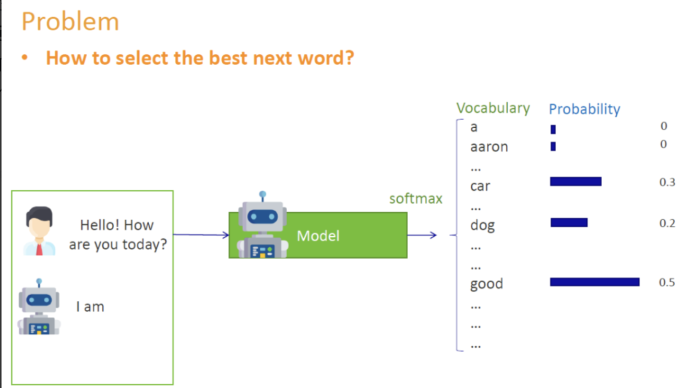

Encoder和Decoder¶
Transformer是一种Encoder-Decoder架构，主要有
-
Encoder:负责对输入序列进行特征提取，得到一系列隐藏向量表示
-
Decoder:解码时，逐步生成目标序列的每个token
Encoder结构¶
有多个Encoder Block
每个Block分为两个子模块：
- MHA
- FFN
通过 ADD & Norm（残差连接与LayerNorm）保持稳定训练并加速收敛
- 核心特征：全局看待输入序列，无未来信息屏蔽（无Mask）
Decoder结构¶
有多个Decoder Block
每个Block分为三部分：
- MHA(自带mask),只可以看到当前step或step以前的token
- Encoder-Decoder Attention
- FFN
同样有Add & Norm机制。例如：
核心特征:要在生成目标序列时，不能看见为生成的token，实现next token prediction
Encoder与Decoder差异¶
Encoder：全局编码¶
在Encoder中，每个位置的token都可与序列中其它所有位置的roken进行自注意力计算，不需要mask。它的目标是充分理解整个输入序列，输出一系列隐藏向量
- 无需区分“过去”或"未来"：因为Encoder只需表示输入，不必生成token
- 机器翻译中，对原语言句子进行编码；在文本分类中，对整段文本向量化。
Decoder:自回归生成¶
Decoder目标是自左至右生成目标序列。为了保证纯粹的自回归属性，它在自注意力阶段要对“未来token”, 进行屏蔽，从而每次只能使用已生成的token信息，预测下一个词
- 带有casual mask:使得位置i的token只能看到i及其以前的位置
- 语言模型（预测下一个单词），堆化系统生成答案。
Decoder的Next Token Prediction¶
假设目标句子是："LLMs are cool",我们在inference时不在拥有真值标签，只能依赖自己一步步生成的结果：
1.time step=1
输入给Decoder的序列： [SOS] (特殊起始符)
Decoder 预测输出：[LLM]
2.time step=2
输入给Decoder的序列：[SOS, LLM]
Decoder 预测输出：[#s]
3.time step=3
输入给Decoder的序列：[SOS, LLM, #s]
Decoder 预测输出：[are]
4.time step=4
输入给Decoder的序列：[SOS, LLM, #s, are]
Decoder 预测输出：[cool]
5.time step=5
输入给Decoder的序列：[SOS, LLM, #s, are, cool]
Decoder 预测输出：[.]
6.time step=6
输入给Decoder的序列：[SOS, LLM, #s, are, cool, .]
Decoder 预测输出：[EOS] (结束符)
解码结束
Decoder需要顺序处理，逐步把上一步的预测结果动作输入拼接进来，和Encoder并行处理不同
BERT与GPT¶
BERT: Encoder-only¶
BERT只使用Encoder不分，用于学习对输入序列的深层双向表示。在其预训练过程中，采用"随机屏蔽部分Token",让模型根据上下文，进行完形填空
- 核心：双向Encoder
- 任务：填空式、理解式（如问答、分类、命名实体识别）
- 不做自回归：BERT不一次性直接预测整个系列后面的Token，而是看完整个句子，猜测被mask的token
- 优点：能捕捉全局上下文，对下游理解类任务效果显著
- 局限：不适合生成场景（如写文本、翻译），因为缺乏Decoder部分
GPT:Decoder-only¶
GPT只使用Decoder部分，用于做自回归语言模型。
在预训练的时候，GPT通过给定左侧文本，预测下一个Token，从而学习到强大的文本生成能力。
- 核心：自回归Decoder
- 任务：Next Token Prediction(可扩展到对话生成、翻译、多任务问答等)
- 带有Mask:只关注已生成的部分，模拟自然语言生成过程
- 优点：适合文本生成类任务
- 缺点：无法向BERT一样直接获取双向上下文信息，只能看左侧历史，对一些需要深度理解的任务可能不如BERT.
Decoding技术¶
解决输出的词表概率如何Decoding成为离散的词 
如何对训练好的模型进行解码很关键。
解码策略会直接影响最终生成文本的质量、连贯度和多样性。
Decoding¶
自回归语言模型：给定当前已生成的上下文，让模型预测下一个Token的概率分布。模型根据该分布， 从词表中为下一个位置选出一个最优或采样得到的Token。直到输出结束符或达到设定的最大长度。

比如：假设我们有一句话的开头是“I am a .”，当前模型对下一个单词的预测概率大致如下：
- boy: 0.46
- banana: 0.30
- dog: 0.12
- cat: 0.10
- fish: 0.02
问题：我们下一步如何从概率分布中“选词”？涉及到解码策略
常见的解码方式¶
- Greedy Decoding:每一步都选取概率最高的词
- Beam Search:保留若干条最有希望的候选序列同步扩展
- Sampling(随机采样)：按概率分布直接采样
- Top-k采样：在概率最高的k个候选中做随机采样
- Top-p采样（核采样，Nucleus Sampling）**
- Temperature调整
Greedy Decoding(贪心策略)¶
贪心解码：在每一步都选取预测概率最高的Token,而不考虑后续的全局最优
- 优点：计算简单，速度快
- 缺点：容易陷入重复循环或生成单调的句子；无法回溯不太优的中间选择，可能错失更优解。

Beam Search¶
Beam Search是在机器翻译、摘要生成等任务中非常有用的解码策略。
核心思想：
- 设定一个 Beam Size=K
- 在每个时间步，对当前所有候选序列都进行下一步扩展，并按照其（对数）概率打分，保留top k条
- 继续迭代，直到生成结束符或达到最大长度
- 优点：较贪心更有“全局搜索”性，一次性保留多条路径，防止过早决策
- 缺点：依旧是基于最大似然偏好的搜索，容易生成通顺但缺乏创造性、多样性；对超长文本可能过于保守
随机采样¶
Random Sampling
从整个词表，按softmax后的概率分布直接抽取一个Token
优点：具有随机性和多样性
缺点：如果概率分布“尾部”很长，可能采样到极不合适的Token(特别是概率很低的词)，整体质量难以保证
为什么需要改进？¶
随机采样虽然带来多样性，但过于随机会让模型出现怪词，这时 就需要Top-k或Top-p等技术来截断长尾分布，只在相对概率较高的词之中进行采样，提高质量又保留一定随机性
Top-k采样：在概率最高的k个候选中做随机采样¶
Top-k采样在每个时间步里，只保留概率最高的k个Token，让模型只在这k个候选中 进行随机抽取。与贪心解码（k=1）相比，更能避免只选最热门候选导致的重复或过度保守，也减少了怪词。
-
输入：从模型给出的下一步Token概率分布\(\pi \in R^{|V|}\)(|V|=词表大小)
-
保留前k个Token，找到令\(\pi_t\)最大的k个，让其概率归一化
-
在这k个Token里按照相对概率进行一次采样
-
优点：在一定范围内（Top-k）随机采样，能兼顾多样性与合理性；k比较小就更保守，大则更有创造力 -缺点：人工指定k不容易；分布较为扁平时，k个候选代表不了所有潜在的好词；分布非常尖锐的时候，k也不一定合适
Top-p 核采样¶
Top-p是对Top-k的改进，k固定在所有情况下可能过大或过小，而p采样则根据概率分布的动态特性来确定保留多少token
- 对预测分布进行从大到小排序：\(\pi_{(1)}\geq \pi_{(2)}\geq \pi_{(3)}\geq \pi_{(4)\geq ...\geq \pi_{(n)}}\)
- 找到最小的m,使得\(\sum_{i=1}^m \pi_{i}\geq p\)，也就是说这m个token的累计概率大于等于p
- 只在这m个Token里进行随机采样，忽略其余token
Top-p与Top-k区别¶
- Top-k:强行控制候选数量为k，不管分布特性
- Top-p:动态确定保留集合的大小，以保证这部分token总概率不低于p
- Top-p往往效果更好
Temperature 采样¶
Temperature是最常与Top-k.Top-p一起使用的另一个调控参数。
他通过对logits值进行缩放，改变分布的尖锐度或是平坦度。令模型输出的logits向量为z 则普通softmax概率是：
引入Temperture T后，概率变为：
- 当T<1:分布变得更尖锐（放大较大的logits，抑制较小的logits），模型更倾向于最可能得词
- 当T>1:分布更平坦，增加随机性
- 当\(T \to 0\):接近贪心
- 当\(T \to \infty\):接近均匀分布
组合策略与实用技巧¶
常见组合¶
- Top-k + Temperature：先截断至k个最可能词，再用温度缩放分布；
- Top-p + Temperature：先做核采样选取概率质量≥p的Token集合，再进行温度调整。
- Beam Search + Temperature：较少见，但也可尝试给Beam Search的候选在扩展时加些噪声，提升多样性。
repetition_penalty等¶
在实践中还会用到一些额外技巧，如：
- 重复惩罚 (repetition_penalty)：对近期已生成过的Token人为降低其概率，避免陷入重复；
- 长度惩罚 (length_penalty)：在机器翻译/摘要中鼓励生成更长或更短句子；
- bad words ban：禁止生成某些关键词。
这些方法与top-k / top-p / temperature不冲突，往往配合一起使用，以达成特定的生成目标。
应用示例¶
下面我们给出一个简化的示例，展示如何在推理时组合使用top-k、top-p和temperature。 假设第t步模型输出logits（仅列举6个单词）： - “colors”：2.15 - “ideas”：1.80 - “lights”：1.20 - “weather”：0.60 - “bananas”：0.20 - “dogs”：-0.10 （其余单词logits更低。）
Temperature调整¶
若temperature=0.8，我们先把logits除以0.8：
转化为概率分布¶
对上述做softmax，得到新的分布（大致）：
(3) top-k¶
若top_k=3，则只保留{colors, ideas, lights}，概率归一化：
(4) top-p¶
若top_p=0.8，先从大到小排：colors(0.47), ideas(0.30), lights(0.23)。累计到第2个就达0.77，不够0.8，第3个加上后为1.00 > 0.8。因此最终保留{colors, ideas, lights}全部，也与top_k=3一致。 最后在{colors, ideas, lights}之间随机采样，得出下一个单词。